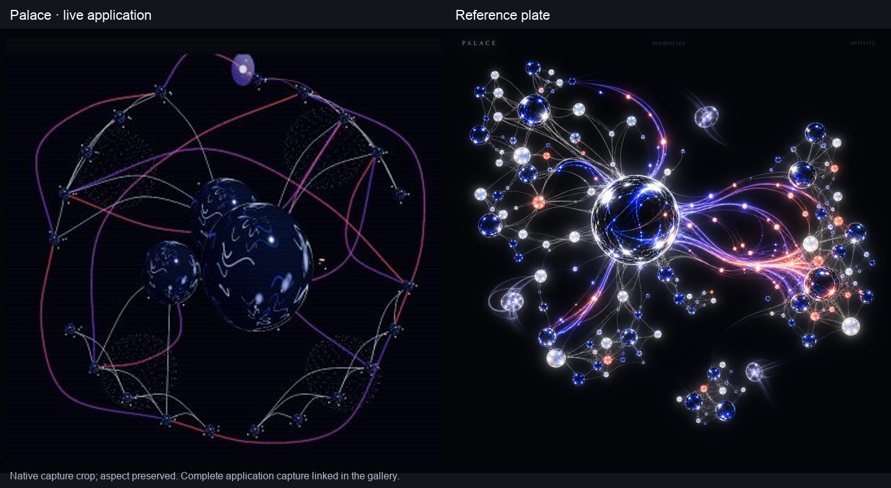
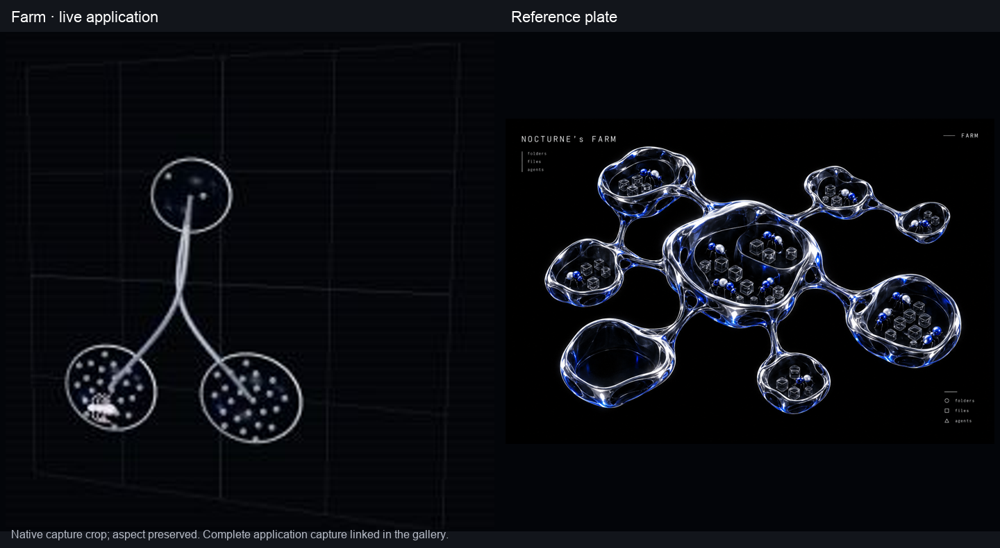

Roots

Six real agents and 184 file capillaries form a joined trunk, but the overlapping forks and five matte stopped branches are less fluid and less luminous than the plate.
Builder candidate. The owner's eye audit remains open; these comparisons do not assert visual acceptance. Native application captures use real disposable Palace/OpenRouter data. Crops fit the whole visible subject beside the unmodified plate, preserve aspect ratio, and retain the complete source captures.
Roots: six agents, 184 recorded file touches. Palace: 24 memories, real retrieval counts and three curator runs. Farm: camera movement over a completed worker's real files; no live file growth is claimed. The final Roots video shows camera movement; roots-activity.webm retains the earlier recording during worker activity. Recordings preserve actual capture timing and export exactly 10.000 seconds at 30 fps; repeated frames fill the export cadence.
Efficient-tier measurement: Roots 119–120 fps in an isolated renderer using the captured six-agent/184-capillary scene; Palace 83–121 fps (118–121 after the first sample) in the live application. Both exceed 60 fps in these measurements.
Six real agents and 184 file capillaries form a joined trunk, but the overlapping forks and five matte stopped branches are less fluid and less luminous than the plate.

The most-injected memories form a central glass mass, but 24 memories leave a sparser radial outline and the reflections and curator streams remain more restrained than the plate.

The unchanged renderer shows the real worker tree with three chambers and 50 file cells, much smaller and less intricate than the plate.
{kind=link}
{kind=link}
{kind=link}